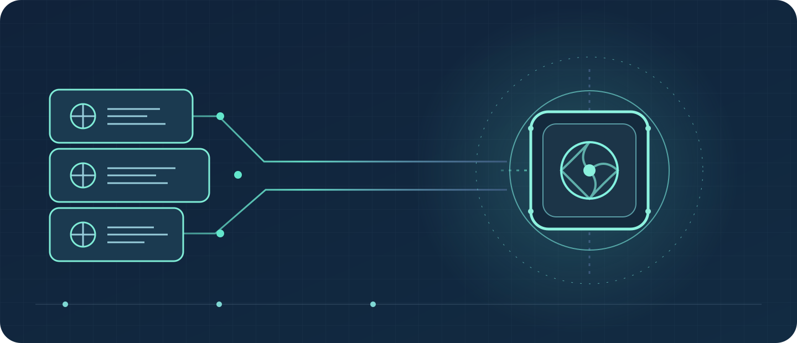
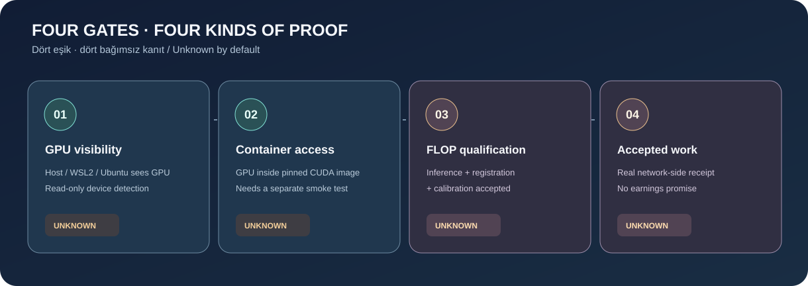
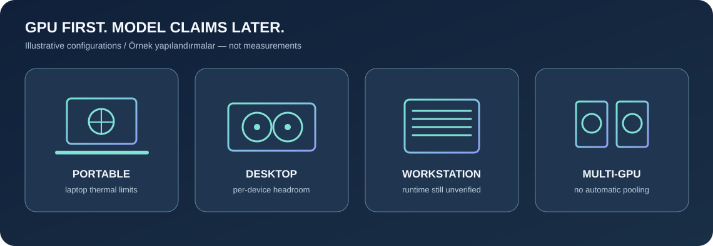
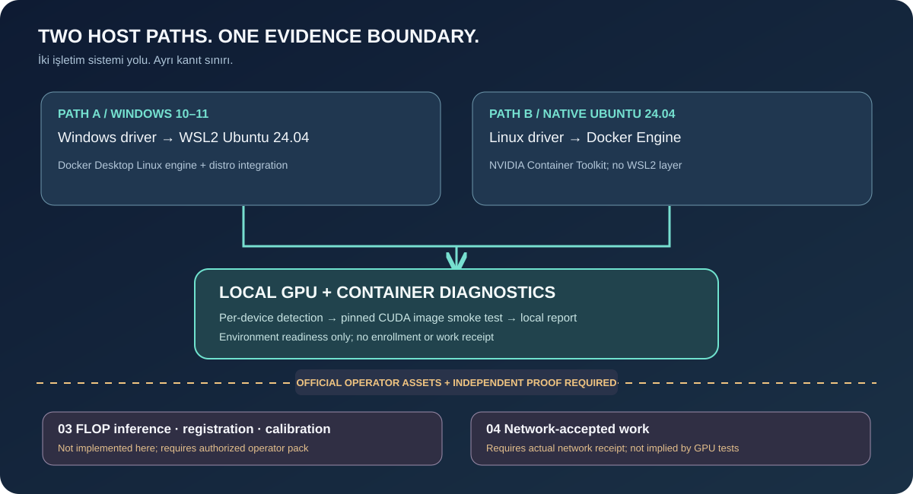
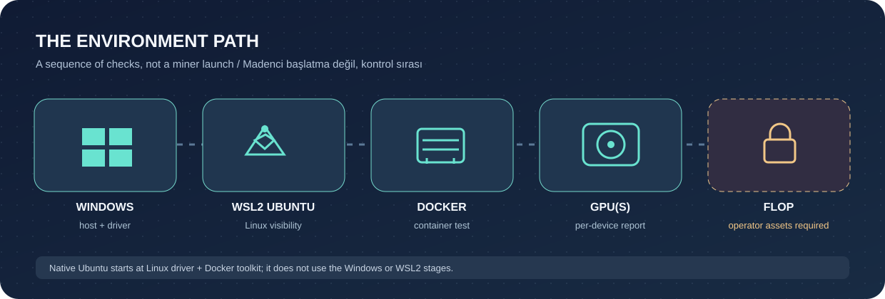

GPU visibility
Host/WSL2 or native Ubuntu sees individual devices. A selected report is a local observation, not an independent test by this page.
Evidence: device diagnostic outputOPEN SOURCE · READ-ONLY FIRST
Know what your GPU can prove. Never confuse a visible device with accepted network work.
Diagnostics only. No miner runtime, wallet, keys or earnings claims.

Official runtime: NOT_IMPLEMENTEDOperator-issued assets are required. Public catalogs and a passing GPU test do not establish registration, calibration or accepted work.
01 / EVIDENCE LADDER
A local JSON report can describe device visibility only. Every other gate needs its own real-world test or authorized network evidence.
Host/WSL2 or native Ubuntu sees individual devices. A selected report is a local observation, not an independent test by this page.
Evidence: device diagnostic outputA separate, digest-pinned CUDA container test must see the GPU. This page never runs Docker or marks this gate passed.
Evidence: container smoke-test outputAuthorized inference, model/checkpoint registration and accepted calibration are distinct official-runtime requirements. No operator pack is included.
Evidence: approved operator/chain recordsRequires an actual network acceptance receipt. Devnet has no earnings promise; container success cannot prove this gate.
Evidence: network-side receipt
02 / HARDWARE LANDSCAPE
Choose a profile to see considerations, not compatibility scores. All example profiles are illustrative, not measured; model name alone never proves FLOP support.

ILLUSTRATIVE · NOT MEASUREDEXAMPLE CONFIGURATION · NO LIVE DATA
Check per-device memory, thermal and power limits. Laptop and desktop cards with similar names are not interchangeable.
Compatibility requires official model policy, checkpoint revision, available VRAM, context, KV-cache and calibration.
03 / SYSTEM WALKTHROUGH
Commands are for a locally cloned repository. Inspect each script before running. Preparation is read-only; setup changes require your deliberate action.
PowerShell, from repository root. Check the installed driver and read-only diagnosis; a visible GPU does not prove WSL access.
nvidia-smi
./scripts/diagnose.ps1Expected: device/driver details if available. If missing: inspect the official Windows driver and supported hardware.
Confirm Ubuntu runs as WSL version 2; a stopped distro or unavailable virtualization needs intervention.
wsl --status
wsl --list --verboseExpected: Ubuntu 24.04 on WSL2. If not: use Microsoft's WSL guidance and recheck virtualization before Docker.
Inside the WSL Ubuntu shell at repository root, check GPU visibility and Docker/Compose diagnostics.
nvidia-smi
bash scripts/preflight.shExpected: device visible and Linux Docker engine reachable. If not: check Docker Desktop WSL integration for this distro.
Opt-in test may pull the digest-pinned CUDA diagnostic image. It does not run a FLOP miner.
bash scripts/gpu-container-test.shExpected: device visible inside the container. If not: investigate engine/integration; never infer model or network support.
At repository root, see whether the host has a working Linux GPU driver.
nvidia-smi
bash scripts/preflight.shExpected: device and driver details. If not: consult Ubuntu and vendor installation instructions before container checks.
Native Ubuntu needs a running Linux Docker daemon, Compose and the NVIDIA Container Toolkit.
docker info
docker compose versionExpected: engine reachable. If not: use official Docker and NVIDIA Container Toolkit setup guides; do not paste unaudited installers.
Opt-in digest-pinned image test may download an image; a success applies to this container check only.
bash scripts/gpu-container-test.shExpected: GPU visible in the diagnostic container. If not: check the container toolkit configuration.
Stop at the official boundary. Inference, registration, calibration and accepted work require operator-provided assets and real receipts. These are not commands this project can run for you.


BEFORE OPENING A REPORT
Run from the cloned repository root. These commands only probe the local GPU and save JSON; no operator runtime is started. Inspect the resulting file before sharing it elsewhere.
New-Item -ItemType Directory -Force reports | Out-Null; py -3 scripts\gpu_detect.py --json | Set-Content -Encoding UTF8 reports\gpu-report.jsonmkdir -p reports && python3 scripts/gpu_detect.py --json > reports/gpu-report.jsonNo-probe preview only: --dry-run skips ALL hardware checks and reports zero GPUs. A dry-run file cannot establish that your computer lacks a GPU.
py -3 scripts\gpu_detect.py --dry-run --jsonUbuntu preview: python3 scripts/gpu_detect.py --dry-run --json04 / PRIVATE REPORT VIEWER
Select JSON produced by scripts/gpu_detect.py --json. The browser reads your chosen file locally; no upload, network request, storage or automatic hardware probe.
The viewer ignores hostname, IP and UUID fields even if a selected file contains them. Review files before sharing them elsewhere.
No report selected. Every evidence gate remains unknown.
CONTINUE WITH PRIMARY SOURCES
Use the guides for the actual shell steps, official prerequisites and troubleshooting. Enrollment rules are operator-controlled and subject to change.